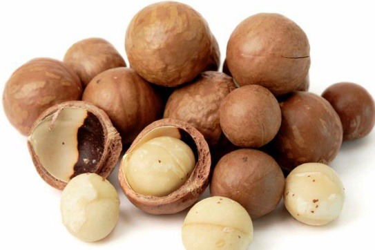

마카다미아(MACADAMIA)
오스트레일리아 북부지역이 원산지인 프로테아목(Proteales) 프로테아과(Proteaceae) 마카다미아속(Macadamia)에 속하는 견과류다.생긴 것은 뽀얀 상아색에 가까운 둥글둥글한 모양의 견과류로, 사실 이 부분은 마카다미아 열매 중 우리가 식용하는 부분인 배젖이다. 진짜 마카다미아 열매는 저 배젖 이미지 뒤에 있는 녹색의 둥그런 열매.

(마카다미아 이미지)
(마카다미아 이미지)
마카다미아의 효능
1. 혈관건강2. 두뇌건강
3. 붓기완화
4. 뼈 및 눈 건강
5. 장 운동 활성화
6. 피부건강